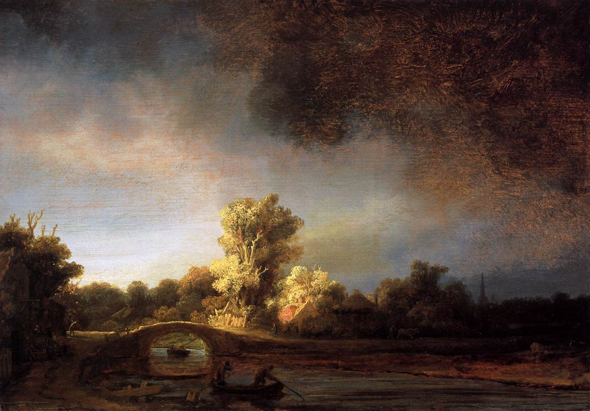
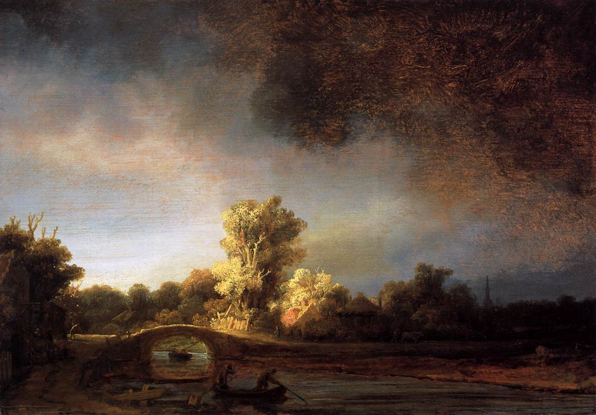

From the Pijks Museum
From the Pijks Museum
Latest Additions

Portrait of Maritge Claendr Vooght
Frans Hals, 1639
Maritge Claendr Vooght is here portrayed in a tradition pose, proudly sitting upright and looking straight out at the viewer

Portrait of Johannes Wtenhogaert
Rembrandt, 1633
Wtenhogaert's face is more realistically modelled than his hands, which may have been done by a pupil in Rembrandt's worship


 
